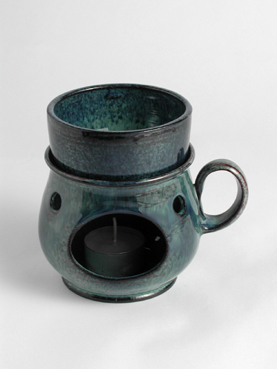
1.Aroma fondue (for chocolate)
Products
Durable ceramics for hospitality spaces and original presentation.

1.Aroma fondue (for chocolate)
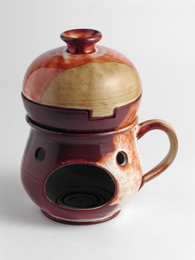
248.Baked apple

147.Goblet, lathe (for wine)

173.Goblet for mulled wine
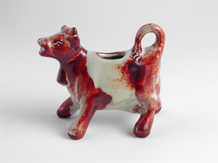
111.Milk cow
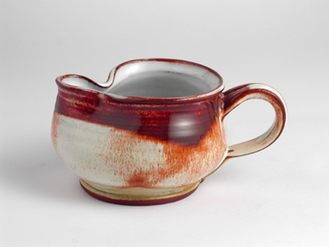
128.Milk pitcher small, low
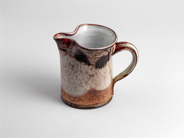
128.Milk pitcher small, straight
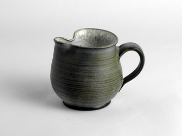
128.Milk pitcher small, bubba
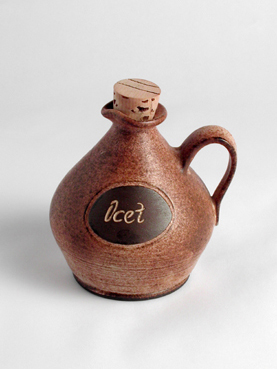
85.Carafe bubba (for oil, vinegar)
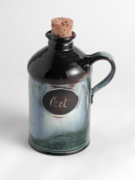
85.Carafe straight (for oil, vinegar)
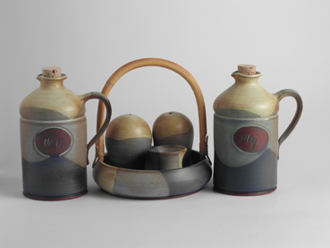
32.Seasoning set with bamboo,85.Carafe straight (for oil, vinegar)
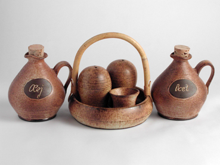
32.Seasoning set with bamboo,85.Carafe bubba (for oil, vinegar)
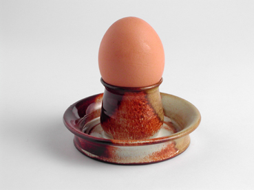
209.Eggcup
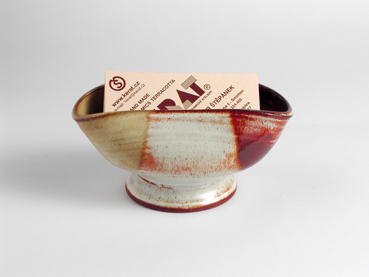
172.Incense visit card
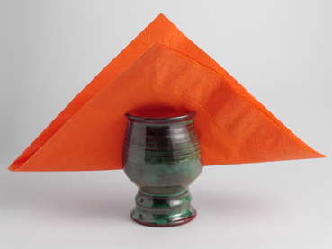
206.Napkin holder goblet-shaped
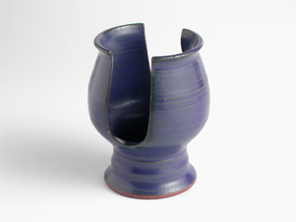
206.Napkin holder goblet-shaped
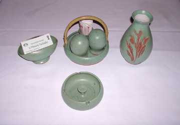
32.Seasoning set with bamboo, 172.Incense visit card, 223.Vase up to 20 cm, 158.Ashtray lathe carved with peep point
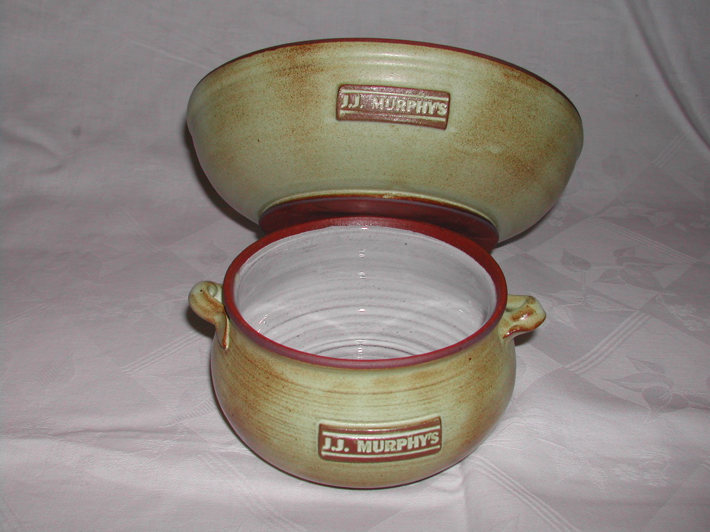
Salad bowl, tureen soup bowl
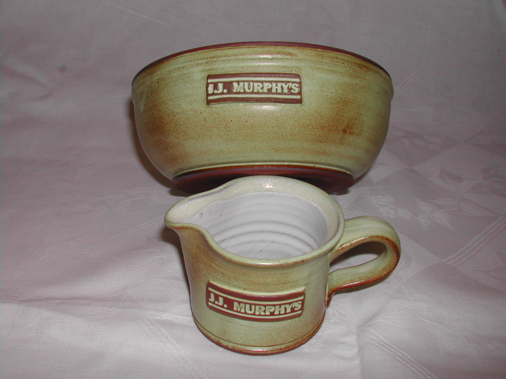
Salad bowl, sauce pitcher
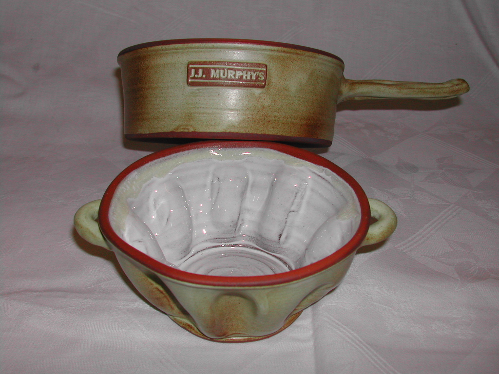
Jockey pot for frying, sponge cake form
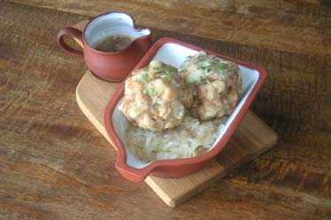
Sauce pitcher, 136.Baking pan
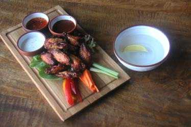
3.Small bowl
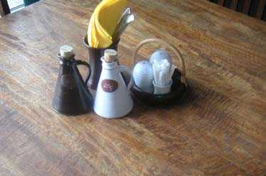
85.Carafe conical, 167.Sideboard, 32.Seasoning set with bamboo,
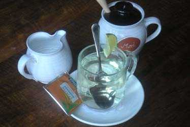
128.Milk pitcher small, 118.Honey bowl

99.Pitcher with tin lid large

101.Pitcher with tin lid small
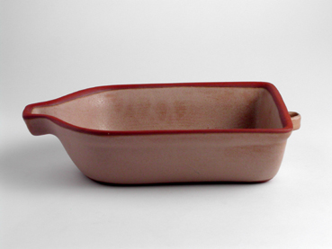
136.Baking pan
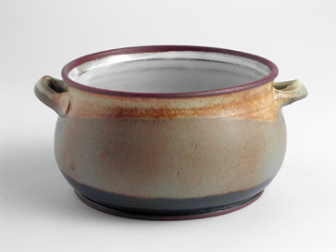
21.Tureen (soup bowl)
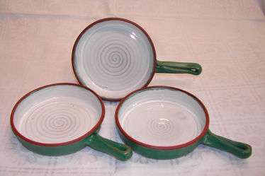
Jockey pot for frying
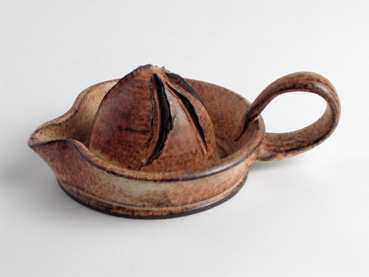
22.Lemon squeezer

162.Pint with emblem bubba

162.Pint with emblem conical

51.Jug with tin lid

50.Jug

242.Party bowls big (folding, for salted snacks)

242.Party bowls big (folding, for salted snacks)

242.Party bowls big (folding, for salted snacks)

242.Party bowls big (folding, for salted snacks)

123.Alien bowl (for peanuts)

127.Party bowls (folding, for salted snacks)
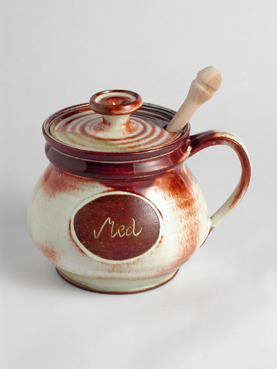
118.Honey bowl
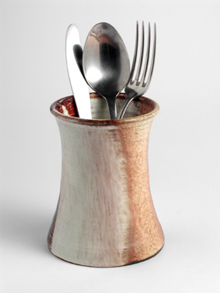
167.Sideboard
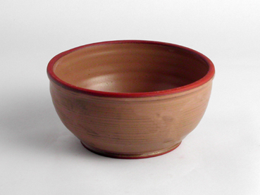
125.Stew bowl
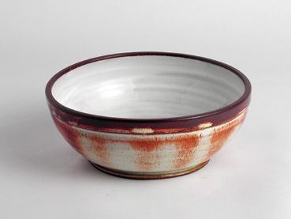
126.Salad bowl up to12 cm
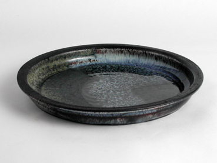
191.Dinner plate 20 cm
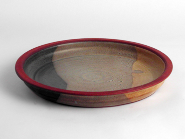
192.Dinner plate 22 cm
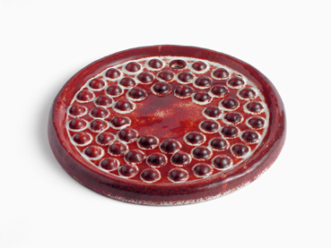
198.Heating plate, small
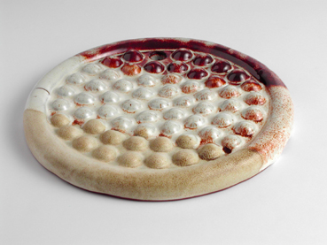
197.Heating plate, large
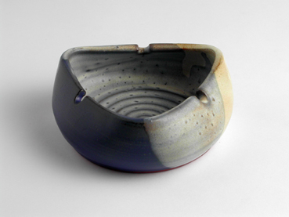
157.Ashtray, lathe, carved
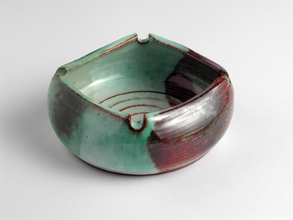
157.Ashtray, lathe, carved
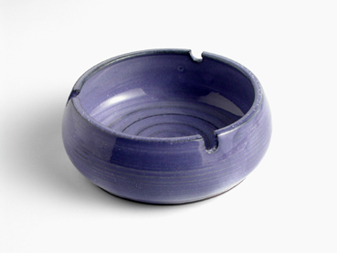
157.Ashtray, lathe, carved
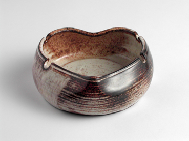
157.Ashtray, lathe, carved
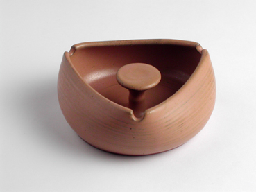
158.Ashtray, lathe, carved with peep point
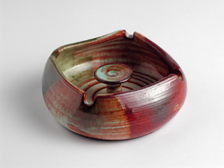
158.Ashtray, lathe, carved with peep point
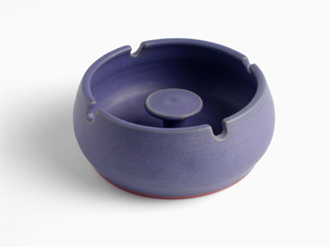
158.Ashtray, lathe, carved with peep point
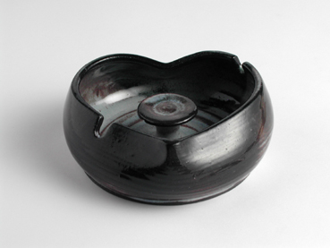
158.Ashtray, lathe, carved with peep point

258.Goblet high for wine bubba

258.Goblet high for wine straight

258.Goblet high for wine straight, 259.Plate for goblet

258.Goblet high for wine bubba, 259.Plate for goblet, 38.Jug 1.0 l

258.Goblet high for wine bubba, 38.Jug 1.0 l

147.Goblet, lathe for wine, 39.Jug 1.5 l

173.Goblet for mulled wine, 39.Jug 1.5 l
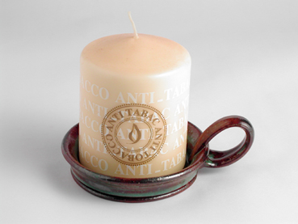
179.Candle holder for thick candles
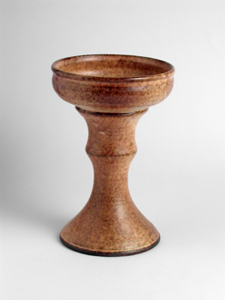
262.Candle holder for thick candles, high
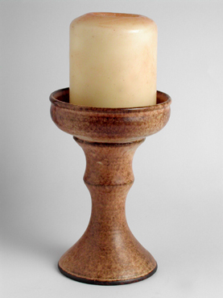
262.Candle holder for thick candles, high
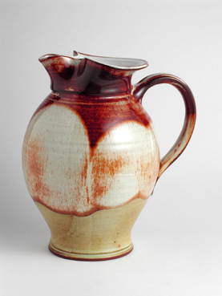
38.Jug 1.0 l

46.Bottle (for liquor)

39.Jug 1.5 l

40.Jug 2.0 l
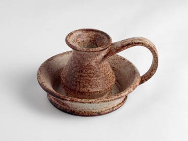
175.Candle holder
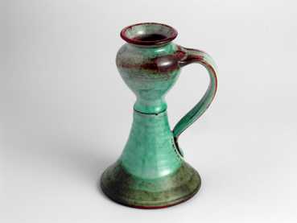
176.Candle holder high model

146.Giant goblet

145.Clerical goblet (for wine)

46.Bottle (for liquor), 113.Liqueur set

113.Liqueur set
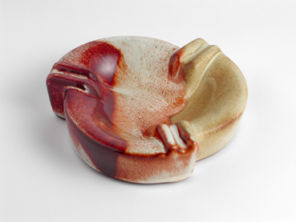
161.Ashtray B, cast
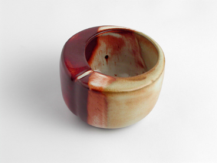
159.Ashtray cast
155.Ashtray outdoor style
153.Ashtray for cigars